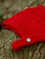
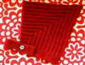

|
||
Premium Patterns Wintry Mix Mitts Love Bytes HawkeyeFree Patterns Kiddie Cadet Summerlin Ruffled Scarf Seamless DS Sock Simply Seamless Pouch Myriads of MushroomsExtras DIY Mitten Blocker Felt Patch Tutorial Yarn Dyeing Tutorial Needle Pouches Knitting Journal |
April 07, 2010 - Posted by Grace SchneblyItty Bitty PixieProject Specs It is a little late to be posting some of my Malabrigo March projects but I just finally found the perfect button for this sweet little bonnet. Finding buttons is something that always throws off my knitting schedule but it is also one of my favorite parts of finishing. I don't have a very good button supply on hand, fortunately Snow Goose Yarns in Milton, MA is close by and they have a really good selection to choose from. I actually had too many options and had a hard time choosing between this vintage flower button which gives the hat more of a vintage feel and a little jingle bell which would make this the perfect Christmas bonnet. It is amazing how much a little button can dictate the spirit of a whole knit! This pattern is very enjoyable to knit. There aren't any fancy techniques used but I thought the style was unique and it held my interest throughout the short time it took to knit. There is some finishing work that consists of kitchenering the top and sewing on the band. I think it would be possible to pick up stitches for the band to eliminate the seaming but I wanted to make sure that the band was extra secure so I sewed it on. The only part of this pattern I wish I had changed was the buttonholes. The way they are written creates a rather sloppy hole that sticks out like a sore thumb on the band. There is also a typo in the button hole instructions and Row 3 should read "Work 3 sts, p2tog, k1, p1, k1, p2tog, work to end." If I were to knit this bonnet again (which is a good possibility since it is SO cute!), I'd change them to simple yo, k2tog holes to save time and to clean them up a bit. There are two sizes included in the pattern, 3-12 months (the size I made) and 12 to 24 months. Since this hat is so stretchy it really can grown with your child for quite a long time. I think this hat will be perfect for Serena once fall comes around. I want to make a matching pair of Tiny Shoes out of the same Malabrigo Lace held double to keep with the vintage style. I have been pretty good at resisting buying more books lately but this one just has too many cute patterns in it. I already have plans to knit the Dewey Cabled Pullover (I especially like Ivana's short sleeve version), Felix Cardigan, Jasper Diamond Hoodie, and the Otto Short-Sleeved Pullover. But of course I purchase the book and start out by knitting the free pattern in it! There is a really good variety of knits in this book including sweaters and jackets, hats, socks and booties, toys, and blankets. I also like that the patterns call for a variety of weights of yarn so you really get a good sampling of projects. |
   Recent ReviewsRecent Posts
 Our Favorites
|
| © 2007 KathrynIvy.com | ||
{kind=link}
{kind=link}